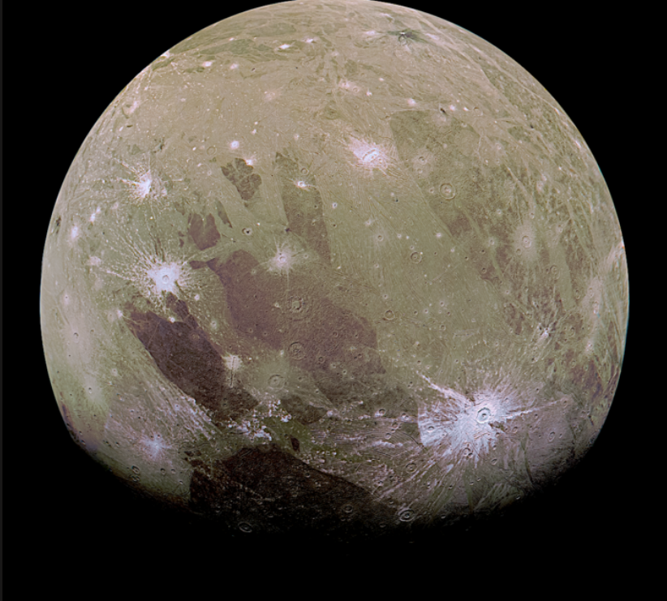

Ganymede — The Largest Moon
Ganymede is the largest moon in the solar system and is even bigger than the planet Mercury. It is one of Jupiter`s four Galilean moons, discovered by Galileo in 1610.
Ganymede is unique because it is the only moon known to have its own magnetic field. This creates a small magnetosphere around the moon, which interacts with Jupiter`s powerful magnetic field.

Why Ganymede Is Important
Ganymede is important because it may contain a hidden ocean beneath its icy surface, similar to Europa. Scientists believe that this ocean could hold more water than all of Earth`s oceans combined.
Its magnetic field and layered structure make it an interesting object for studying how moons and planets form and evolve over time.
Facts About Ganymede
- Ganymede is the largest moon in the solar system.
- It is bigger than the planet Mercury.
- It has its own magnetic field.
- Ganymede is made of rock and ice.
- It has a surface with both dark and light regions.
- It orbits Jupiter in about 7 days.
Ganymede Data
- Diameter: 5,268 km
- Distance from Jupiter: About 1,070,000 km
- Orbit Time: About 7 Earth days
- Surface: Ice and rock
- Special Feature: Only moon with a magnetic field
- Discovery: Galileo Galilei (1610)